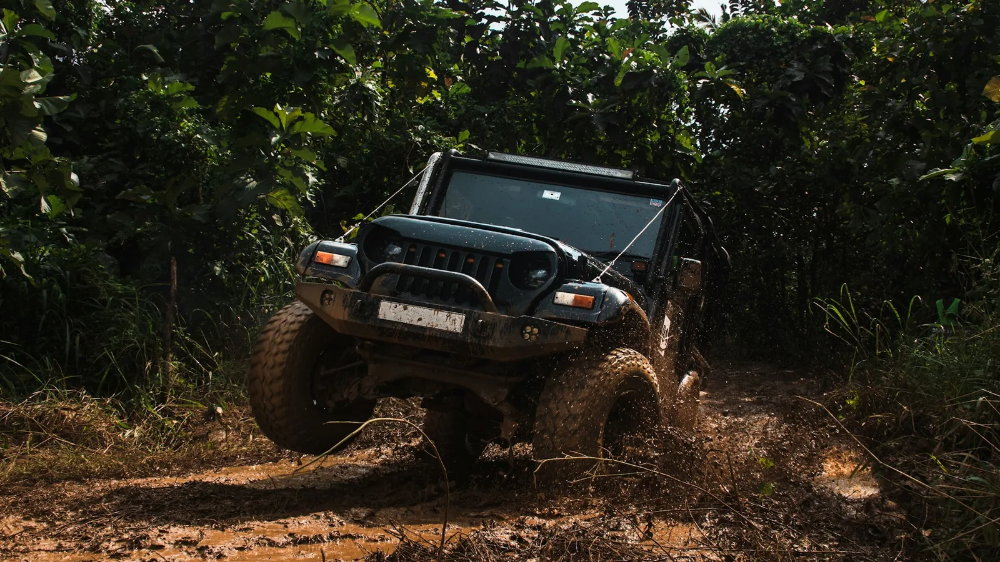

01Mecánica general
Atención mecánica para las necesidades de cada vehículo.
Saber másNuestro enfoque
Ofrecemos mecánica general, mantenimiento, reparaciones y diagnosis en nuestro taller de Vilafranca del Penedès, con especial atención a 4x4 y vehículos clásicos. Cada consulta empieza por conocer el vehículo y lo que necesita.
El alcance de cada intervención se valora caso por caso. Cuéntanos qué ocurre o qué proyecto tienes en mente.
Atendemos necesidades mecánicas con una valoración individual. Las opciones se explican antes de avanzar con la intervención.
El mantenimiento considera el estado, uso e información disponible del vehículo.
Buscamos comprender el origen de la avería antes de proponer una reparación. La valoración definitiva requiere revisar el vehículo.
Se plantean en función de las características del vehículo y del objetivo del proyecto.
Cuéntanoslo y hablamos del siguiente paso.